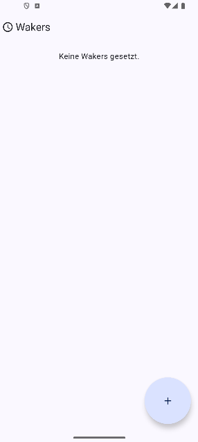
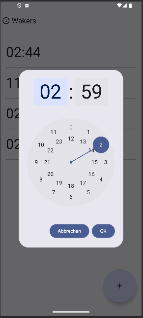

Waker – Challenge Wecker
Waker ist ein innovativer Wecker, der dich aktiv zum Aufstehen zwingt.
Statt einfach nur einen Button zu drücken, musst du Aufgaben wie Handy schütteln, Fragen beantworten oder andere Challenges meistern.
Ideal für alle, die morgens nur schwer in die Gänge kommen und eine Portion Motivation brauchen.

Startbildschirm ohne gespeicherte Alarme.

Alarm-Dialog zur Auswahl der Weckzeit.

Liste aller aktiven und inaktiven Alarme.